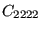
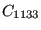

In a direct integration dynamic analysis, activated by the *DYNAMIC key word, the equation of motion is integrated in time using the  -method developed by Hilber, Hughes and Taylor [54]. The parameter
-method developed by Hilber, Hughes and Taylor [54]. The parameter  lies in the interval [-1/3,0] and controls the high frequency dissipation:
lies in the interval [-1/3,0] and controls the high frequency dissipation:  =0 corresponds to the classical Newmark method inducing no dissipation at all, while
=0 corresponds to the classical Newmark method inducing no dissipation at all, while  =-1/3 corresponds to maximum dissipation. The user can choose between an implicit and explicit version of the algorithm. The implicit version (default) is unconditionally stable.
=-1/3 corresponds to maximum dissipation. The user can choose between an implicit and explicit version of the algorithm. The implicit version (default) is unconditionally stable.
In the explicit version, triggered by the parameter EXPLICIT in the *DYNAMIC keyword card, the mass matrix is lumped, and a forward integration scheme is used so that the solution can be calculated without solving a system of equations. Each iteration is much faster than with the implicit scheme. However, the explicit scheme is only conditionally stable: the maximum time step size is proportional to the time a mechanical wave needs to cross the smallest element in the mesh. For linear elements the proportionality factor is 1., for quadratic elements it is
. For elastic materials, the wave speed in a rod is
, where E is Young's modulus and  is the material density.
is the material density.